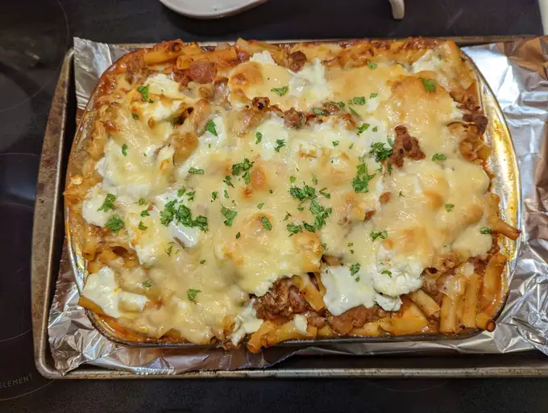

Baked Ziti Recipe

Description
Simply the best baked ziti recipe. I am half Italian,
was raised eating the finest Italian-American cuisine,
and have filmed almost 2,000 recipe videos, so when you
consider all of those facts, it seems incredible that I
have never posted a video for baked ziti. Hopefully I make
up for that long wait by posting what I think is the best version
of it.
Ingredients
- ¾ pound hot Italian sausage
- ¾ pound sweet Italian sausage
- 2 tablespoons olive oil
- 1 large yellow onion, diced
- ½ teaspoon dried oregano
- 2 cups water
- 8 ounces mozzarella cheese, cut into small cubes
- 1 cup grated Pecorino Romano cheese
Instructions
-
Cut down the length of each sausage with a sharp knife.
Remove and discard casings.
-
Heat olive oil in a large saucepan set over high heat. Add
sausages and onion. Cook, stirring occasionally and breaking
up with a spatula, until sausage begins to brown, and onion turns
translucent, 5 to 7 minutes. Add oregano, thyme, and rosemary and
cook for 1 minute more. Pour in marinara sauce. Pour 1 cup water
into each jar to rinse out remaining sauce;
add to the saucepan. Stir together and bring sauce to a simmer.
-
Reduce the heat to medium-low, and let simmer, stirring
occasionally, for 1 hour. Taste for seasoning and adjust
if needed. Turn off heat and reserve until needed. Before
using, skim any excess fat that rises to the surface.
-
While sauce simmers, bring a large pot of generously salted
water to a boil. Add ziti and cook, stirring occasionally,
for 1 or 2 minutes less than the directions on the package
call for, about 8 minutes. Drain well and transfer into a
large mixing bowl.